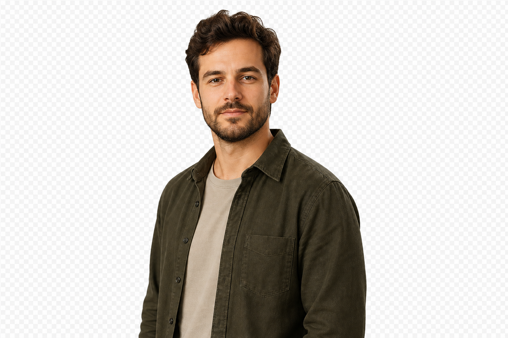

Case study / 01
Positron tracking system
Real-time positioning and operational visibility for personnel and equipment in complex industrial environments.
AngularRxJSMapsRealtime data
I shape complex frontend products into clear, dependable tools — from architectural decisions to the teams and delivery practices behind them.

Real-time positioning and operational visibility for personnel and equipment in complex industrial environments.
Technical leadership, architecture and delivery across industrial, retail and IoT products.
years solving complex frontend problems
Clarify what matters, structure it to grow, then make quality repeatable through useful technical patterns and team alignment.
This interaction models the final contact path. We will choose email, a short form, or a calendar link when the contact page is designed.